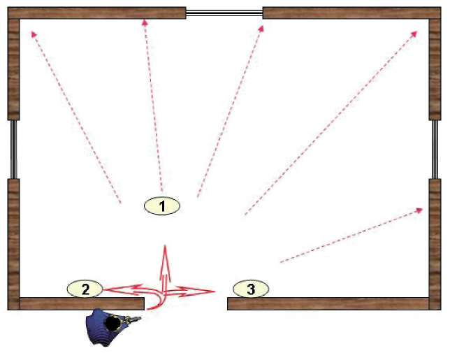

Şekil-24.) Sol yöne doğru köşe açma tekniği 4.1.3. Bir Kişi ile İki Yönde Köşe Açma Tekniği Atışa hazır olan silahınızla beraber, önce bulunduğunuz yöndeki köşeyi açıp mümkün olduğunca hızlı şekilde ayağınızı değiştirmeden, vücudunuzun belinden ters yöndeki köşeye doğru döndüğünüzde iki köşeyi de açmış olursunuz. (Bakınız Şekil 25.a, 25.b) Şekil-25.a) Bir kişi ile iki yönde köşe açma tekniği 168


BÖLÜM
OPERASYON VE OPERASYON TEKNİKLERİ
Şekil-25.b) Bir kişi ile iki yönde köşe açma tekniği 4.2. KAPALI ALANDA OPERASYON TEKNİKLERİ
4.2.1. Bir Kişi ile Kapalı Alanda Operasyon Kapalı alana giriş yapmadan önce kapalı kapıyı açmak gerekir. Kapı kapalı değilse olabildiğince hızlı şekilde gözünüzle içerinin fotoğrafını çekip içerde uygulayacağınız hareket tarzını belirleyip sırasıyla köşe açma tekniğini uygulayarak, köşelerdeki hedef veya hedefleri etkisiz hâle getirip ilk girişinizi ve kısmen de olsa alanda ilk hâkimiyetinizi sağlayın.
Bir sonraki aşamada size en yakın tehlike oluşturacak veya hedefin saklanma ihtimalinin yüksek olduğu eşyaların (kanepe, koltuk, masa, kapalı dolapların) arkasını ve içini ayrıca diğer tehlike arz eden kısımları da seri bir şekilde kontrol edip bulunduğunuz alanın emniyetini alın.
Kontrol etmeniz gereken başka alanlar varsa, yakından uzağa doğru veya hedefin bulunma ihtimali yüksek olan alanlara öncelik vererek operasyona devam edin. (Bakınız Şekil-26)